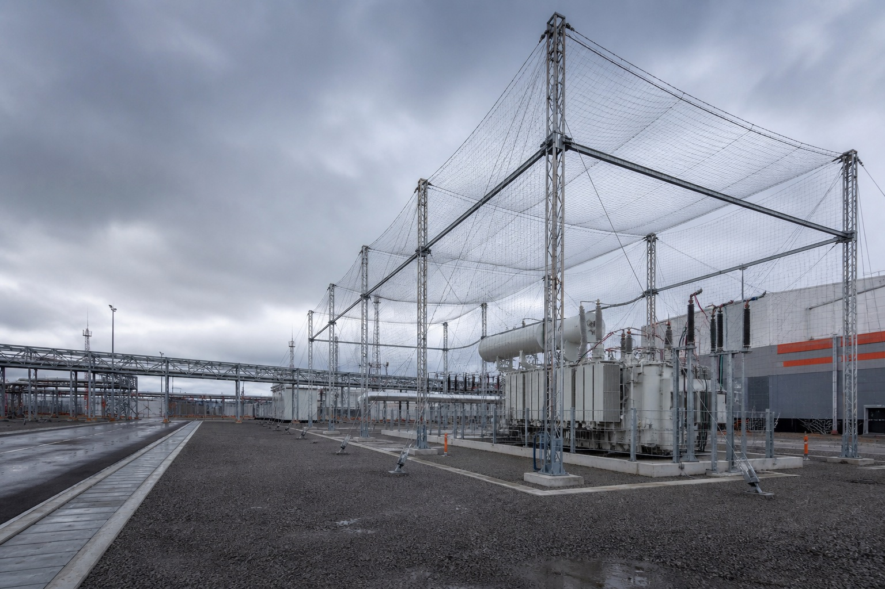
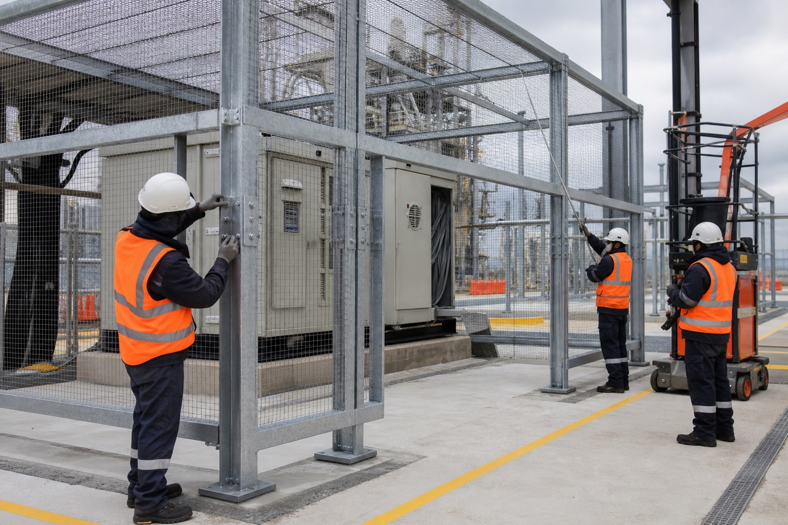
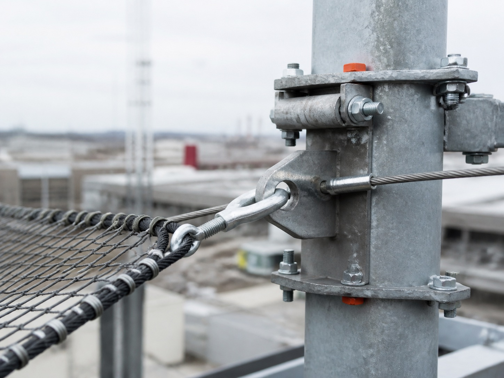

Обследование
Уязвимые зоны и исходные данные
Указ № 604 от 24 августа 2026 года: неэффективность мер защиты критической инфраструктуры может повлечь временное управление активами.
Что изменилось
Инженерная защита критической инфраструктуры
Проектируем защитные ограждающие конструкции под геометрию объекта, режим эксплуатации, климатические нагрузки и требования СП 542.1325800.2024.
Для первого разговора не нужны точный адрес и режимные документы.
Независимый защитный контур над критическим оборудованием
Уязвимые зоны и исходные данные
Конструкция под объект и угрозу
Изготовление, логистика и монтаж
Комплект для эксплуатации и контроля
Правовой контекст · 2026
Указ Президента РФ № 604 допускает временное управление активами, если меры безопасности не приняты вовремя, нарушают требования или признаны неэффективными — в том числе против угроз с использованием БПЛА.
Значим не факт закупки, а обоснованность решения: обследование, расчёт, проект, реализация и эксплуатационные документы.
Указ не обязывает каждое предприятие установить конкретную систему и не означает автоматической национализации. Применимость требований определяется индивидуально. Информация на странице не является юридическим заключением.
Сначала — приоритеты
Критичность узла определяется не его ценой, а последствиями отказа для всей технологической цепочки.
Отказ одного узла способен остановить смежные процессы, отгрузку или энергоснабжение.
Пожар, разгерметизация и повреждение соседнего оборудования увеличивают масштаб аварии.
Осколки и аварийная остановка создают угрозу персоналу и экстренным службам.
Руководству нужны документы, которые объясняют выбор решения и порядок контроля.
Принцип работы
Его задача — не обещать абсолютную защиту, а отнести точку воздействия от критического оборудования и снизить тяжесть последствий в пределах расчётных параметров.
Сопоставляем сценарии отказа и возможный ущерб.
Учитываем геометрию, расстояния и эксплуатационные зоны.
Подбираем несущую схему, материалы и крепления.
Предусматриваем проходы, проезды и ремонтные сценарии.
Объекты защиты
Часто разумнее начать с ограниченного перечня наиболее важных узлов. Приоритет определяется обследованием и анализом последствий отказа.
Уточнить применимостьНефтебазы, резервуарные парки, насосные станции
Химия, металлургия, машиностроение, переработка
ТЭЦ, подстанции, трансформаторное оборудование
Склады, терминалы и распределительные центры
Транспорт, связь, ЦОД и жизнеобеспечение
Лабораторные и потенциально опасные площадки
Инженерные принципы
Окончательные материалы, расстояния и состав решения фиксируются после обследования, расчёта и согласования технического задания.
Без нерасчётных нагрузок на существующее оборудование.
Геометрия и крепления определяются исходными данными.
Проходы, проезды, открываемые и съёмные участки.
Ветер, снег, гололёд, температура и сейсмика.
Осмотр и локальная замена повреждённых элементов.
С наблюдением, оповещением и другими уровнями защиты.

Монтаж с сохранением доступа к оборудованию

Ремонтопригодный узел крепления
Без режимных документов
Для первого вывода достаточно типа объекта, региона и оборудования. Точный адрес, схемы и сведения ограниченного доступа не нужны.
Маршрут проекта
Состав этапов зависит от категории объекта, готовности исходных данных и границ ответственности сторон.
Тип объекта, критическое оборудование, регион и стадия проекта.
Результат: перечень нужных данныхПри необходимости — NDA и согласованный канал передачи материалов.
Результат: защищённые исходные данныеГеометрия, коммуникации, проезды и ограничения действующего объекта.
Результат: акт и исходные данныеГраницы защиты, расчёты, узлы, спецификации и организация монтажа.
Результат: согласованный комплект документацииИзготовление, логистика и работы по согласованному плану.
Результат: смонтированная системаИсполнительные документы, инструкции по осмотру и обслуживанию.
Результат: система в эксплуатационном контуреПроверяемые основания
Нормативная база зависит от категории, назначения и ведомственной принадлежности объекта. Финальный состав фиксируется в техническом задании и проекте.
Запросить открытый комплектМеры безопасности критической инфраструктуры и временное управление активами.
Правила проектирования защитных ограждающих конструкций от БПЛА.
Антитеррористическая защищённость объектов промышленности.
Требования безопасности объектов ТЭК не пересказываются на открытой странице.
Комплексный подход
Пассивные конструкции дополняют обнаружение, оповещение и законные средства противодействия — но не заменяют их.
Раннее выявление и классификация угрозы.
Не предотвращает контакт само по себеДействия персонала, остановка процессов, эвакуация.
Зависит от времени реакцииВоздействие на угрозу уполномоченными субъектами.
Требует законных полномочийСнижает риск прямого поражения и тяжесть последствий.
Работает в расчётных пределахКоротко о главном
Не нашли ответ? Обсудите объект без передачи чувствительных данных.
Позвонить инженеруНет. Система проектируется под согласованные расчётные параметры и снижает риск в их пределах. Абсолютная гарантия была бы технически недостоверной.
Нет. Указ не называет конкретное оборудование. Состав достаточных мер определяется для каждого объекта индивидуально.
Во многих случаях — да. Порядок работ определяют после обследования с учётом производства, опасных зон, проездов и коммуникаций.
Требования к проходам, проездам, съёмным участкам и доступу фиксируются в техническом задании до проектирования.
Расчётом — по параметрам угрозы, типу оборудования, конструктивной схеме и требованиям безопасности. Универсальной цифры нет.
От геометрии, нагрузок, площадки, коммуникаций, требований к доступу, логистики, монтажа и состава документации — не только от площади.
Состав задаёт договор: обычно обследование, техническое задание, проектная или рабочая документация, спецификации, паспорта, исполнительные и эксплуатационные документы.
Не через публичную форму. Сначала согласуются NDA, состав данных, уровень доступа и защищённый канал обмена.
Безопасный первый шаг
Сообщите тип объекта, регион и оборудование. Инженер уточнит задачу и сформирует перечень исходных данных.
Точный адрес и режимные документы для первого обращения не нужны.